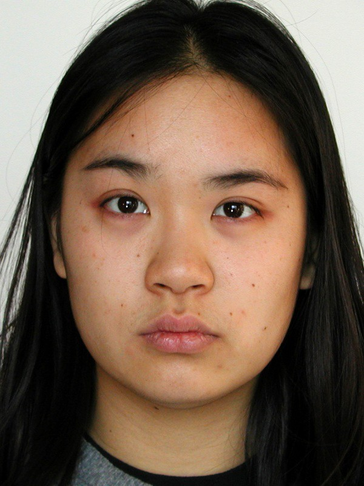

DevBlog
Tonny Ruiz-Gijón
Home
Image processing sample APP
Imagen original
Your browser does not support the HTML5 canvas tag.
Your browser does not support the HTML5 canvas tag.
Histograma y su CDF:
Imagen integral:
Your browser does not support the HTML5 canvas tag.
Elige otra imagen
